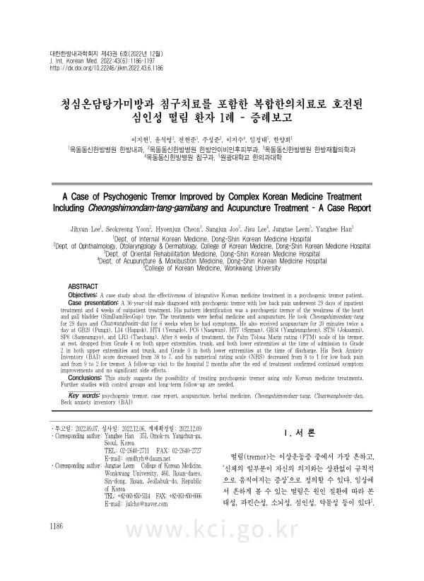

A Case of Psychogenic Tremor Improved by Complex Korean Medicine Treatment Including Cheongshimondam-tang-gamibang and Acupuncture Treatment - A Case Report
Lee J, Yoon S, Cheon H, Joo S, Lee J, Leem J, Han Y
The Journal of Internal Korean Medicine 43(6):1186-1197

첫 장 · 오픈액세스First page · open access
논문 소개Summary
떨림은 이상운동증 가운데 가장 흔하고 원인에 따라 본태성과 파킨슨성, 소뇌성, 심인성, 약물성으로 나뉩니다. 심인성 떨림은 기질적 원인이 없는데도 나타나며 그만큼 다룰 방법이 마땅치 않습니다.
서양의학에서는 이차 원인이 없는 떨림에 프로프라놀롤이나 프리미돈을 주로 쓰고, 듣지 않으면 신경차단술이나 심부뇌자극술로 넘어갑니다. 앞의 두 약은 서맥과 혈압 저하, 불안, 두통, 어지럼, 오심이 보고되어 있고 수술은 뇌출혈과 언어장애, 발작이 보고되어 있습니다.
36세 남성이 요통을 동반한 심인성 떨림으로 29일 입원하고 4주 외래 치료를 받았습니다. 2020년 5월 양쪽 다리 떨림으로 시작해 항우울제와 항경련제를 처방받았으나 나아지지 않았고, 뇌 전산화단층촬영과 뇌파, 근전도, 전해질 검사에서 기질적 이상이 없어 전환장애가 의심된다는 소견을 받았습니다. 요통에는 신경차단술을 두 차례 받았지만 효과가 없었습니다. 변증은 심담허겁이었습니다. 청심온담탕가미방을 29일 복용했고 증상이 있을 때 천왕보심단을 6주간 함께 썼습니다. 침은 하루 두 차례 20분씩 풍지와 합곡, 영도, 내관, 신문, 양릉천, 족삼리, 삼음교, 태충에 놓았습니다.
8주 뒤 안정 시 떨림의 판-톨로사-마린 등급은 입원 때 양쪽 상지와 체간, 양쪽 하지가 모두 4등급이던 것이 퇴원 때 상지와 체간 2등급, 하지 0등급이 되었습니다. 벡 불안척도는 38점에서 7점으로 떨어졌습니다. 숫자통증척도는 요통이 8점에서 1점으로, 떨림이 9점에서 2점으로 줄었습니다. 치료를 마치고 두 달 뒤 다시 왔을 때도 호전이 유지되었고 이렇다 할 부작용은 없었습니다.
불안 점수가 38점에서 7점으로 내려간 것과 떨림이 함께 줄어든 것은 따로 떼어 보기 어렵습니다. 심인성 떨림에서 불안을 다루는 일이 곧 떨림을 다루는 일일 수 있다는 뜻입니다. 다만 저자들은 이것을 인과로 쓰지 않았습니다.
한계는 분명합니다. 대조군 없는 증례 하나이고 한약과 침을 함께 썼으며 장기 추적도 두 달에 그쳤습니다. 저자들은 이 결과를 한의 치료만으로 심인성 떨림을 다룰 가능성을 보여 준 것으로만 두고, 대조군을 두고 오래 지켜보는 연구가 필요하다고 적었습니다.
Tremor is the commonest movement disorder, classified by cause as essential, parkinsonian, cerebellar, psychogenic or drug-induced. Psychogenic tremor appears without organic cause, and there is correspondingly little to treat it with.
A 36-year-old man with psychogenic tremor and low back pain received 29 days of inpatient and four weeks of outpatient treatment. Pattern identification was weakness of the heart and gallbladder. He took modified Cheongshimondam-tang for 29 days and Chunwangbosim-dan as needed for six weeks. Acupuncture was given twice daily for 20 minutes at GB20, LI4, HT4, PC6, HT7, GB34, ST36, SP6 and LR3.
After eight weeks, the Fahn–Tolosa–Marin grade of resting tremor had moved from grade 4 in both upper extremities, trunk and both lower extremities on admission to grade 2 in the upper extremities and trunk and grade 0 in the lower extremities at discharge. The Beck Anxiety Inventory fell from 38 to 7. The numerical rating scale fell from 8 to 1 for low back pain and from 9 to 2 for tremor. At a follow-up visit two months after treatment ended the improvements held, with no significant adverse effects.
The fall in anxiety from 38 to 7 and the reduction in tremor are hard to separate from one another. In psychogenic tremor, treating the anxiety may be the same act as treating the tremor. The authors do not, however, write this as causation.
The limitations are plain: one case without controls, herbal medicine and acupuncture used together, follow-up of only two months. The authors leave the finding as evidence that treating psychogenic tremor with Korean medicine alone may be possible, and call for controlled studies with longer follow-up.
인용Cite
Lee J, Yoon S, Cheon H, Joo S, Lee J, Leem J, Han Y. A Case of Psychogenic Tremor Improved by Complex Korean Medicine Treatment Including Cheongshimondam-tang-gamibang and Acupuncture Treatment - A Case Report. The Journal of Internal Korean Medicine. 2022;43(6):1186-1197. doi:10.22246/jikm.2022.43.6.1186